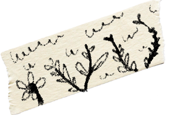
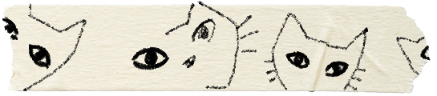
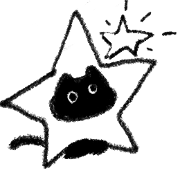
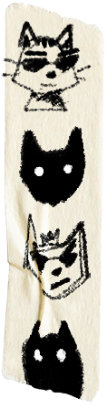
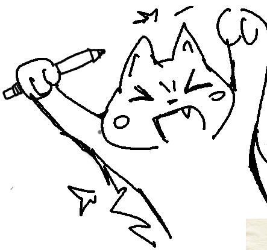
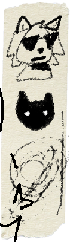
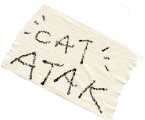
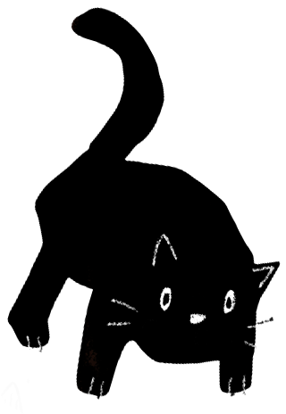

Hi Pinterest!
I’m Albert Dong, I study computer science at Brown University, and I’m applying to Pinterest’s Software Engineer role as a (soon-to-be) University Grad. I’m an artist before a computer scientist, and Pinterest is a large part of why.
I grew up making digital art, and Pinterest was one of the foundational tools I had for developing taste. Pinterest recommendations found me references for stylized paintings, grayscale portraits to practice shading faces, and mood board inspiration for writing stories. Even in my daily life, Pinterest is my go-to for all things outfits, nail designs, and haircuts. Over time, Pinterest has become a record of what caught my eye and why. As AI makes it easier to produce almost anything, I believe taste is becoming a scarce skill, and Pinterest is the product that helps people discover and sharpen theirs.
This conviction shapes my technical work. I’m drawn to human-centered AI and the intersection of software and creative work. Outside of school I’ve built projects across computer vision, graphics, and AI tooling, usually aimed at making complex workflows feel intuitive. Most recently, I developed an AI accessibility remediation tool after seeing Brown faculty struggle to make course content digitally accessible; it has since received funding and has been officially adopted by my university.
Pinterest is my dream job. I can’t overstate how much it has shaped the way I view the world. I would be grateful for the chance to give back to my roots and help build the next generation of artists and curious people. Thank you for your consideration.